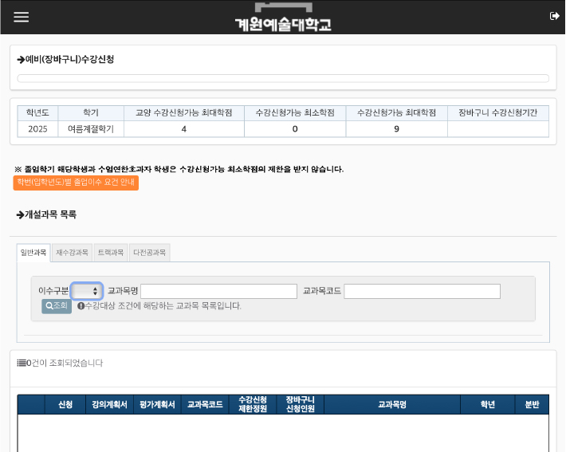
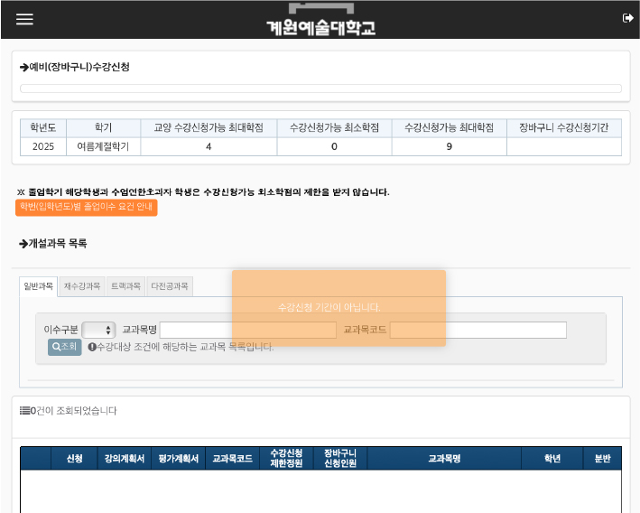
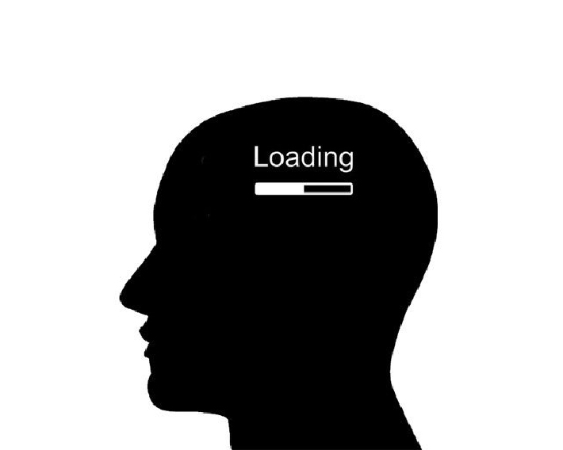

1
선착순 방식의 치열함과 불공정
선착순 방식은 빠른 속도를 강조하지만, 컴퓨터 환경, 인터넷 속도, 시간 확인 여부 등에 따라 개인 간 유불리가 커집니다. 인기 과목의 경쟁률이 워낙 높아 수강 성공 여부가 거의 운에 달려 있다는 의견도 많습니다. 폐강 위기 과목을 피하려는 전략적 신청도 발생하며, 이는 수강의 본래 목적(학업 성취)에서 벗어나는 상황으로 언급됩니다.

▲ 선착순 방식의 경쟁 상황
2
UX 관점에서‘정신없는’UI 디자인
수강신청 시스템은 보통 복잡한 메뉴, 분리된 정보 탭(검색, 인원, 시간표 등), 혼란스러운 시각적 계층을 가집니다. 이로 인해 사용자의 흐름을 흐트러뜨리고 인지 부담을 높입니다. 이 구조는 흔히 “기능은 많은데, 사용자의 과정을 고려하지 않았다”는 UX 설계 비판으로 이어집니다.
▲ 복잡한 UI 예시 이미지
3
시스템 불안정성과 실시간 장애
수강신청 시작 직후 서버 장애나 접속 지연, 오류 데이터 노출 등이 잦아 긴장감을 더합니다. 일부 학교는 30분 이내 장애 공지를 하고 시스템을 중단하는 정책을 운영하지만, 이는 오히려 혼란을 심화시키는 원인이 되기도 합니다.
▲ 서버 장애와 접속 지연 상황
4
UX 불일치 및 인지 부하
버튼 클릭과 기대되는 행동이 불일치하거나, 모달 닫음 → 로그인 페이지 전환처럼 사용자의 기대 흐름이 깨지는 경험이 존재합니다. 이러한 불일치는 예측 가능성 위배, 인지적 불확실성, 피츠의 법칙(fitts’ law) 위반으로 인한 인지 부하 증가로 이어집니다.
▲ 기대 불일치로 인한 인지 스트레스